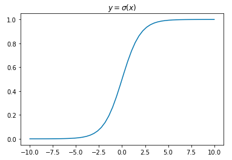

by Suraj Rampure (suraj.rampure@berkeley.edu)
Often, we read that logistic regression maximizes the log-odds of an event. What exactly does that mean? Where does the sigmoid function come from?
First, some context. Typically, we study binary classification – that is, classifying a test point x as belonging to class 1 or class 0 (for example, determining whether or not a certain patient has breast cancer, where x is all of their health information).
In order to do this, we model the probability of a point belonging to either class, and use some cutoff/threshold value to determine when we predict class 1 vs. class 0. We use logistic regression to do this – logistic regression is a form of regression that takes in a set of variables and outputs a probability, that is, a continuous value between 0 or 1. To be clear, logistic regression on its own is not a form of classification. In order to use logistic regression for classification, we require a decision boundary.
As a concrete example, suppose we somehow predict that the probability that one certain individual has breast cancer to be 68%. If we choose a decision boundary of 50%, that would mean any individual with a probability greater than (or equal to) 50% we would predict to have breast cancer, and any individual with less than 50% we would predict does not have breast cancer. In this case, with a 50% decision boundary, we would say this individual does have breast cancer, but with a 70% decision boundary, we would say they do not.
Moving forward, p will refer to the probability of a point belonging to class 1 (hence, 1−p is the probability it belongs to class 0).
In statistics, we say that the "odds" of an event that occurs with probability p is p1−p. Sometimes this is referred to as "odds-in-favor", as opposed to "odds-against" (or 1−pp, as is commonly used in sports betting). The odds of an event with p=23 is 2, sometimes denoted as 2:1 or "two-to-one".
By log-odds, we quite literally mean log(p1−p) (with log representing the natural log, ln(⋅)). Suppose we set the log-odds of p to some value α, e.g. log(p1−p)=α. We can actually solve for p in this expression:
log(p1−p)elog(p1−p)p1−ppp(1+eα)p⟹p=α=eα=eα=eα−peα=eα=eα1+eα=eα1+eα⋅e−αe−α=11+e−α
This resulting function α↦11+e−α is referred to as the sigmoid function, σ(x)=11+e−x.
Looking at a graph of σ(x), we see that it accepts any value in ℝ as an input, and outputs values in the range [0,1] – perfect for a probability distribution.

Now, recall, we set the log-odds of p equal to α. Instead, we can set the log-odds equal to some linear function of x, and optimize this function.
p=11+e−(θ0+θ1x)
And, since p represents the probability of our test point x belonging to class 1, we can be more specific and say
P(Y=1|x)=σ(θ0+θ1x)=11+e−(θ0+θ1x)
where Y is the class of point x.
We also don't need to restrict ourselves to using a single scalar input variable. In vector form, if we say θ=[θ0θ1...θk]T is our weight vector and ϕ(x) is our feature vector, i.e. ϕ(x)=[1ϕ1(x)ϕ2(x)...ϕk(x)]T, we can say
P(Y=1|x)=σ(ϕT(x)θ)=11+e−ϕT(x)θ=11+e−(θ0+θ1ϕ1(x)+...+θkϕk(x))
(Notice, we use x to represent a vector, and x to represent a scalar.)
As a concrete example, suppose we want to determine the probability of a baby growing to be over 6 feet tall, given their mother's height x1, father's height x2, and height at age 2 x3. We can say x=⎡⎣⎢⎢⎢⎢1x1x2x3⎤⎦⎥⎥⎥⎥. Suppose we let one feature be a bias term, another feature be the average of their parents' heights and a third be the sin of their age 2 height; we could then say ϕT(x)=[1x1+x22sin(x3)] (these aren't necessary good features, as this is just an example). Since this is a linear model, of course, we'd have θ=⎡⎣⎢⎢θ0θ1θ2⎤⎦⎥⎥. Then,
P(Y=1|x)=σ(ϕT(x)θ)=11+e−(θ0+θ1x1+x22)+θ2sin(x3)
Then, using the appropriate loss function and a training set, we could determine the optimal set of weights θ to create the best predictor. We've now performed logistic regression, but we haven't yet built a classifier – a classifier outputs "1" or "0", and we have a function P(Y=1|x) that outputs continuous values in the range [0,1].
Suppose the cutoff boundary for our classifier is p0, meaning probabilities greater than or equal to p0 are classified as 1, and below p0 as 0. Then:
classify(x)={10P(Y=1|x)≥p0P(Y=1|x)<p0
Note: The decision to classify the case P(Y=1|x)=p0 as class 1 was arbitrary. We could equivalently set it to class 0.